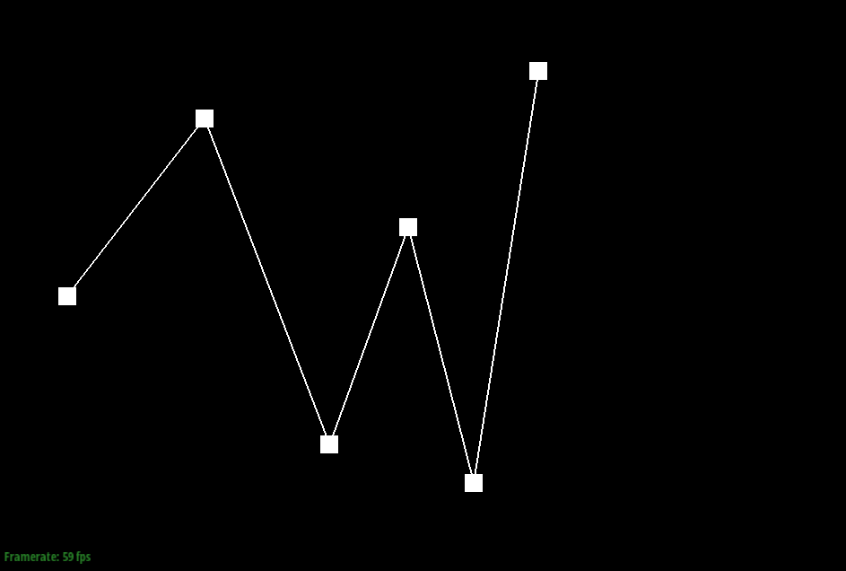
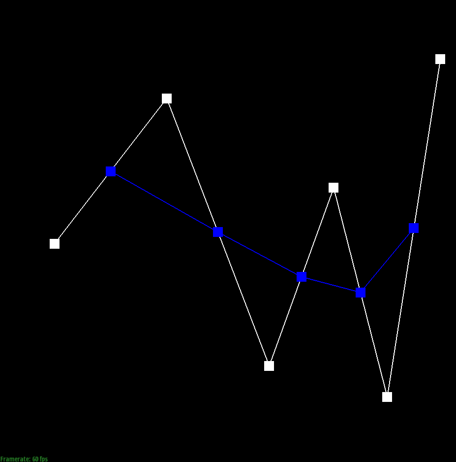
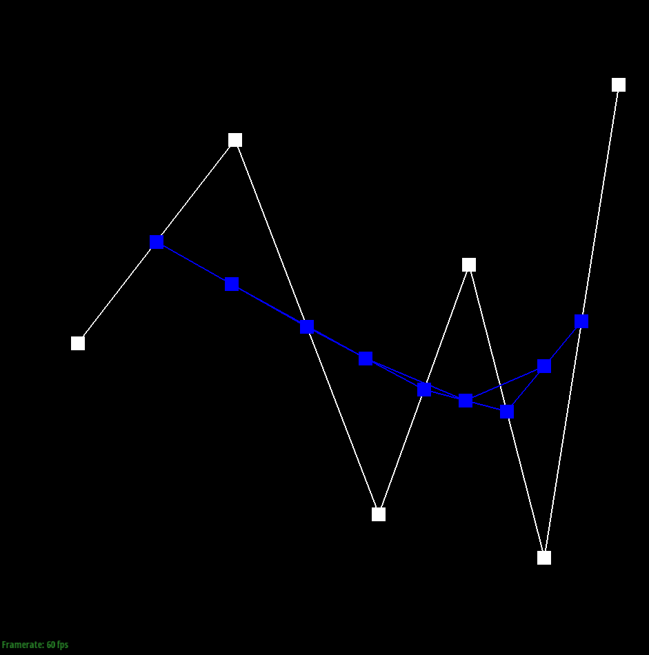
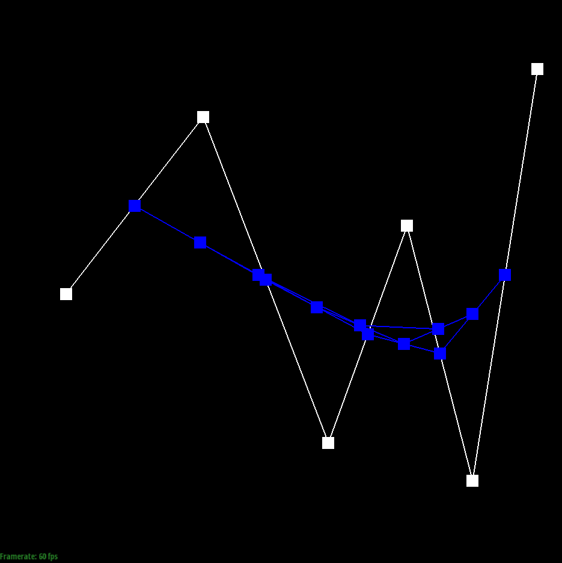
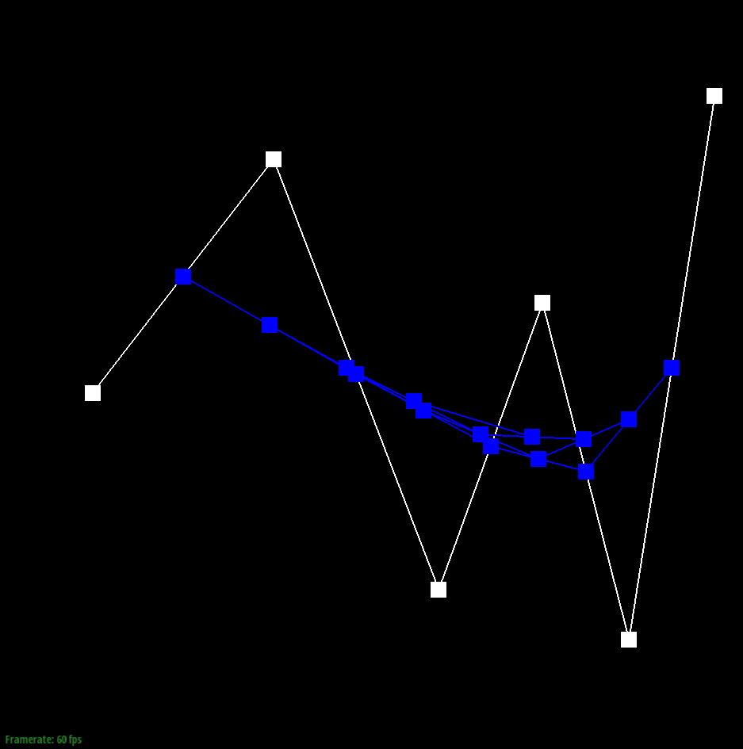
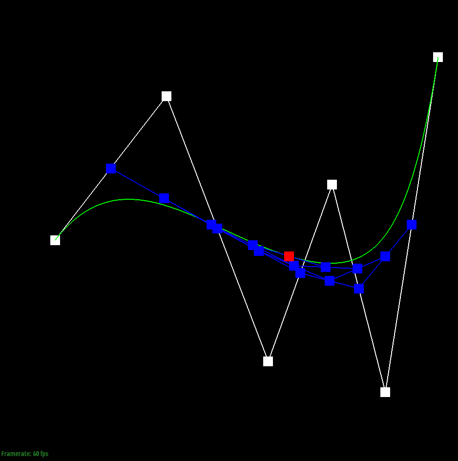

CS184/284A Spring 2025 Homework 2 Write-Up
Overview
This homework involved implementing Bézier curves and surfaces using the De Casteljau algorithm, and performing mesh operations such as computing vertex normals, edge flips, edge splits, and Loop subdivision. It provided hands-on experience in both geometric interpolation and half-edge data structure manipulation.
Section I: Bézier Curves and Surfaces
Part 1: De Casteljau Algorithm
The De Casteljau algorithm provides a recursive method to evaluate a point on a Bézier curve
given a set of control points and a parameter t where t ∈ [0,1].
It works by linearly interpolating between control points until a single point is obtained.
Input Parameters
- Control points: \(P_0, P_1, \dots, P_n\)
- Parameter: \(t \in [0,1]\)
- Order: \(n\) (degree of the Bézier curve)
Recursive Formula
\[ P_i^{(0)} = P_i \\ P_i^{(r)}(t) = (1 - t)P_i^{(r-1)}(t) + tP_{i+1}^{(r-1)}(t) \\ B(t) = P_0^{(n)}(t) \]
Algorithm Outline
- Initialize \(P_i^{(0)} = P_i\).
- For \(r = 1\dots n\), compute \(P_i^{(r)}\) recursively.
- Output \(P_0^{(n)}(t)\).
Here is an example 2x2 gridlike structure using an HTML table.
|  |
 |
|  |
 |
|  |
|
|  |
 |
Part 2: Bézier Surfaces with Separable 1D De Casteljau
The algorithm evaluates a point on a Bézier surface at \((u, v)\) using the tensor-product approach: first interpolate along \(u\) for each row, then interpolate those results along \(v\).
Algorithm Steps
-
For each row of control points:
\[ Q_i(u) = \text{DeCasteljau}(P_{i,0},\dots,P_{i,m};u) \]
- Collect \(Q_0(u),\dots,Q_n(u)\).
-
Apply De Casteljau again along \(v\):
\[ S(u,v) = \text{DeCasteljau}(Q_0(u),\dots,Q_n(u);v) \]
Code
Vector3D BezierPatch::evaluate(double u, double v) const {
std::vector<Vector3D> rowpoints(controlPoints.size());
for (int i = 0; i < controlPoints.size(); i++) {
rowpoints[i] = evaluate1D(controlPoints[i], u);
}
return evaluate1D(rowpoints, v);
}
evaluate1D(points,t): runs De Casteljau on a 1D control-point set.rowpoints[i]: \(Q_i(u)\).- Final \(S(u,v)\) is returned.
Section II: Triangle Meshes and Half-Edge Data Structure
Part 3: Area-Weighted Vertex Normals
This function computes an approximate unit normal at a vertex by taking the area-weighted average of all adjacent triangle normals. The cross product of two edges of a triangle gives a vector proportional to \(A_f n_f\), where \(A_f\) is the face area and \(n_f\) its unit normal. Summing these vectors and normalizing yields a smooth shading normal.
\[ N_v = \frac{\displaystyle \sum_{f \in \mathrm{adj}(v)} A_f \, n_f} {\left\| \displaystyle \sum_{f \in \mathrm{adj}(v)} A_f \, n_f \right\|} \]
Vector3D Vertex::normal(void) const {
HalfedgeCIter h = halfedge();
HalfedgeCIter start = h;
Vector3D point1 = this->position;
Vector3D N(0,0,0);
do {
Vector3D point2 = h->next()->vertex()->position;
Vector3D edge1 = point2 - point1;
Vector3D point3 = h->next()->next()->vertex()->position;
Vector3D edge2 = point3 - point1;
Vector3D norm = cross(edge1, edge2);
N += norm;
h = h->twin()->next();
} while (h != start);
return N.unit();
}
Step-by-Step Execution
- Initialize \(N=(0,0,0)\) and store vertex position \(p\).
- Iterate over all faces in the one-ring using
h = h->twin()->next(). - Compute edges \(e_1 = p_2 - p\), \(e_2 = p_3 - p\).
- Cross product gives area-weighted face normal: \(n_f^{weighted} = e_1 \times e_2\).
- Accumulate into \(N\).
- Normalize \(N\) to get unit normal.

Part 4: Edge Flip
Edge flip replaces the shared edge of two adjacent triangles with the other diagonal, improving mesh regularity or valence distribution.
Initial Configuration
Two adjacent triangles share edge \(b\leftrightarrow c\):
- \(\triangle a b c\)
- \(\triangle c b d\)
After flipping, shared edge becomes \(a\leftrightarrow d\).
Code
EdgeIter HalfedgeMesh::flipEdge(EdgeIter e0) {
if (e0->isBoundary()) return e0;
HalfedgeIter ad = e0->halfedge();
HalfedgeIter da = ad->twin();
HalfedgeIter ab = ad->next();
HalfedgeIter ca = ab->next();
HalfedgeIter cd = da->next();
HalfedgeIter db = cd->next();
VertexIter b = ad->vertex();
VertexIter c = da->vertex();
VertexIter a = ca->vertex();
VertexIter d = db->vertex();
ad->vertex() = a;
da->vertex() = d;
FaceIter left = ad->face();
FaceIter right = da->face();
b->halfedge() = db;
c->halfedge() = ca;
a->halfedge() = ad;
d->halfedge() = da;
ca->next() = cd;
cd->next() = da;
da->next() = ca;
ab->next() = ad;
ad->next() = db;
db->next() = ab;
ad->face() = left;
db->face() = left;
ab->face() = left;
da->face() = right;
ca->face() = right;
cd->face() = right;
left->halfedge() = ad;
right->halfedge() = da;
ad->twin() = da;
da->twin() = ad;
return e0;
}
Explanation
- Check boundary (skip if true).
- Cache halfedges and vertices.
- Reassign main edge to connect \(a\) and \(d\).
- Update vertex halfedge pointers.
- Fix
next()cycles to represent new triangles. - Reassign face pointers for affected halfedges.
- Return flipped edge iterator.
 |
 |
Part 5: Edge Split
Edge splitting inserts a midpoint vertex \(v_4\) on edge \(e_0\), subdividing two adjacent triangles into four.
Mathematical Rule
\[ v_4 = \frac{v_0 + v_1}{2} \]
Code
VertexIter HalfedgeMesh::splitEdge(EdgeIter e0) {
HalfedgeIter h0 = e0->halfedge();
HalfedgeIter h1 = h0->next();
HalfedgeIter h2 = h1->next();
HalfedgeIter h3 = h0->twin();
HalfedgeIter h4 = h3->next();
HalfedgeIter h5 = h4->next();
HalfedgeIter h6 = h1->twin();
HalfedgeIter h7 = h2->twin();
HalfedgeIter h8 = h4->twin();
HalfedgeIter h9 = h5->twin();
VertexIter v0 = h0->vertex();
VertexIter v1 = h3->vertex();
VertexIter v2 = h2->vertex();
VertexIter v3 = h5->vertex();
EdgeIter e1 = h1->edge();
EdgeIter e2 = h2->edge();
EdgeIter e3 = h4->edge();
EdgeIter e4 = h5->edge();
FaceIter f0 = h0->face();
FaceIter f1 = h3->face();
HalfedgeIter h10 = newHalfedge();
HalfedgeIter h11 = newHalfedge();
HalfedgeIter h12 = newHalfedge();
HalfedgeIter h13 = newHalfedge();
HalfedgeIter h14 = newHalfedge();
HalfedgeIter h15 = newHalfedge();
VertexIter v4 = newVertex();
v4->position = (v0->position + v1->position) / 2;
v4->isNew = true;
EdgeIter e5 = newEdge();
EdgeIter e6 = newEdge();
EdgeIter e7 = newEdge();
e5->isNew = true;
e6->isNew = true;
e7->isNew = false;
FaceIter f2 = newFace();
FaceIter f3 = newFace();
h0->setNeighbors(h11, h3, v0, e0, f0);
h1->setNeighbors(h14, h6, v1, e1, f3);
h2->setNeighbors(h0, h7, v2, e2, f0);
h3->setNeighbors(h4, h0, v4, e0, f1);
h4->setNeighbors(h10, h8, v0, e3, f1);
h5->setNeighbors(h15, h9, v3, e4, f2);
h6->setNeighbors(h6->next(), h1, v2, e1, h6->face());
h7->setNeighbors(h7->next(), h2, v0, e2, h7->face());
h8->setNeighbors(h8->next(), h4, v3, e3, h8->face());
h9->setNeighbors(h9->next(), h5, v1, e4, h9->face());
h10->setNeighbors(h3, h13, v3, e5, f1);
h11->setNeighbors(h2, h14, v4, e6, f0);
h12->setNeighbors(h1, h15, v4, e7, f3);
h13->setNeighbors(h5, h10, v4, e5, f2);
h14->setNeighbors(h12, h11, v2, e6, f3);
h15->setNeighbors(h13, h12, v1, e7, f2);
v0->halfedge() = h0;
v1->halfedge() = h1;
v2->halfedge() = h2;
v3->halfedge() = h5;
v4->halfedge() = h3;
e0->halfedge() = h0;
e1->halfedge() = h1;
e2->halfedge() = h2;
e3->halfedge() = h4;
e4->halfedge() = h5;
e5->halfedge() = h10;
e6->halfedge() = h11;
e7->halfedge() = h12;
f0->halfedge() = h0;
f1->halfedge() = h3;
f2->halfedge() = h13;
f3->halfedge() = h12;
return v4;
}
Explanation
- Cache original halfedges, vertices, edges, and faces.
- Create six new halfedges, three edges, two faces, and the new vertex \(v_4\).
- Set neighbors for both old and new halfedges to form four triangles.
- Assign representative halfedges to vertices, edges, and faces.
- Return \(v_4\).
|
 |
Part 6: Loop Subdivision for Mesh Upsampling
Loop subdivision refines a triangular mesh to produce a smoother surface by: computing new vertex positions, splitting edges, and flipping edges to improve valence regularity. After one iteration, the mesh has ~4× more triangles and a smoother appearance.
Overview of Steps
- Compute new positions for original vertices (Loop vertex rule).
- Compute new positions for edge midpoints (Loop edge rule).
- Split all original edges, inserting new vertices.
- Flip edges connecting a new and old vertex to maintain mesh regularity.
- Update all vertex positions to their computed new positions.
1. Update Original Vertex Positions
For an original vertex \(v\) with degree \(n\), the new position is:
\[ v' = (1 - n\beta)v + \beta \sum_{i=1}^n v_i \]
- \(v\): original vertex position
- \(v_i\): neighboring vertices
- \(\beta = \begin{cases} \frac{3}{16} & n = 3 \\ \frac{3}{8n} & n > 3 \end{cases}\)
Each vertex is marked isNew = false, and the result is stored in newPosition.
2. Update Edge Midpoint Positions
For an edge with vertices \(v_0, v_1\) and opposite vertices \(u, w\):
\[ e' = \frac{3}{8}(v_0 + v_1) + \frac{1}{8}(u + w) \]
This is stored in Edge::newPosition, and edges are marked isNew = false.
3. Split Original Edges
Only edges of the original mesh are split:
- The midpoint vertex \(m\) is created by
mesh.splitEdge(e). m->isNew = true,m->newPosition = e->newPosition.
Each triangle is subdivided into four smaller ones.
4. Flip Edges
To maintain mesh regularity, new edges that connect one new and one old vertex are flipped:
if (e->isNew && (v0->isNew != v1->isNew)) {
mesh.flipEdge(e);
}
5. Update Final Positions
After all splits and flips, update all vertex positions:
v->position = v->newPosition;
Result
After these steps, the mesh is denser and smoother, closely approximating a high-resolution surface according to Loop subdivision rules.